Application n°3
library(knitr)
library(dplyr, quietly = TRUE,warn.conflicts = F)
library(car,warn.conflicts = F,quietly=T)
library(sf)
library(mapsf)
library(RColorBrewer)L’objectif de la présente analyse est d’analyser un tableau de données individuelles permettant de décrire le niveau de vie des ménages en fonction d’un certain nombre d’indicateurs endogènes ou exogènes.
A. DONNEES
Le jeu de données est un échantillon de variables relatives aux ménages du Bénin lors du RP 2013. Il s’agit plus précisément d’une extraction par tirage au sort de 100 ménages dans chacun des 546 arrondissements du Bénin. Le tirage au sort a été effectué en se limitant aux ménages composés d’au moins deux personnes, dont le chef de ménage est marié ou en union libre et dont les variables chosies ne comportent pas de valeurs manquantes ou non renseignés. La base de sondage se compose donc d’1.305 millions de ménages sur les 2 millions que compte le Bénin à cette date. L’échantillon comporte exactement 54600 lignes (100 pour chacun des 546 arrondissements).
Les variables ont été anonymisées en supprimant le numéro d’identification des ménages du recensement et en le remplaçant par le code de l’arrondissement suivi d’un chiffre de 001 à 100. Les variables les plus discriminantes ont vu leur nombre de modalité réduit.
Importation
On importe les données
don <- readRDS("BEN-MEN-2013/BEN-MEN-2013-SAMPLE.RDS")
kable(head(don), caption = "Premières lignes du tableau")| ID | WGT | DEP | DEP_NAME | COM | COM_NAME | ARR | ARR_NAME | URBA | DEP_CHEF | COM_CHEF | COM_CHEF_DIST | DEP_CHEF_DIST | NAT_CHEF_DIST | statoc | tailmen | locnais | datnais | age | sexe | etud5 | radio | telev | hifi | parab | magne | cddvd | frigo | cuisi | foyam | ferre | clima | venti | lit | matel | faumo | ordi | inter | elgen | bicyc | motoc | voitu | barqu | telfix | telmob | equip_tot | equip_acp | |
|---|---|---|---|---|---|---|---|---|---|---|---|---|---|---|---|---|---|---|---|---|---|---|---|---|---|---|---|---|---|---|---|---|---|---|---|---|---|---|---|---|---|---|---|---|---|---|---|
| 7 | 01101_001 | 37.58 | 01 | ALIBORI | 011 | BANIKOARA | 01101 | FOUNOUNGO | 0 | 0 | 0 | 23.30885 | 55.21384 | 572.8043 | PropFam | 4 | 011 | 1987 | 26 | M | 1.Aucun | FALSE | FALSE | FALSE | FALSE | FALSE | FALSE | FALSE | FALSE | FALSE | FALSE | FALSE | FALSE | FALSE | FALSE | FALSE | FALSE | FALSE | FALSE | TRUE | FALSE | FALSE | FALSE | FALSE | FALSE | 1 | -1.1496591 |
| 39 | 01101_002 | 37.58 | 01 | ALIBORI | 011 | BANIKOARA | 01101 | FOUNOUNGO | 0 | 0 | 0 | 23.30885 | 55.21384 | 572.8043 | PropFam | 7 | 011 | 1978 | 35 | M | 1.Aucun | TRUE | FALSE | FALSE | FALSE | FALSE | FALSE | FALSE | FALSE | FALSE | FALSE | FALSE | FALSE | FALSE | FALSE | FALSE | FALSE | FALSE | FALSE | TRUE | TRUE | FALSE | FALSE | FALSE | FALSE | 3 | -0.6338360 |
| 45 | 01101_003 | 37.58 | 01 | ALIBORI | 011 | BANIKOARA | 01101 | FOUNOUNGO | 0 | 0 | 0 | 23.30885 | 55.21384 | 572.8043 | PropFam | 6 | 011 | 1982 | 31 | M | 1.Aucun | TRUE | FALSE | FALSE | FALSE | FALSE | FALSE | FALSE | FALSE | FALSE | FALSE | FALSE | FALSE | TRUE | FALSE | FALSE | FALSE | FALSE | FALSE | TRUE | FALSE | FALSE | FALSE | FALSE | TRUE | 4 | -0.3559969 |
| 76 | 01101_004 | 37.58 | 01 | ALIBORI | 011 | BANIKOARA | 01101 | FOUNOUNGO | 0 | 0 | 0 | 23.30885 | 55.21384 | 572.8043 | PropInd | 9 | 011 | 1970 | 43 | M | 1.Aucun | TRUE | FALSE | FALSE | FALSE | FALSE | FALSE | FALSE | FALSE | FALSE | FALSE | FALSE | FALSE | TRUE | FALSE | FALSE | FALSE | FALSE | FALSE | TRUE | TRUE | FALSE | FALSE | FALSE | TRUE | 5 | -0.0904709 |
| 91 | 01101_005 | 37.58 | 01 | ALIBORI | 011 | BANIKOARA | 01101 | FOUNOUNGO | 0 | 0 | 0 | 23.30885 | 55.21384 | 572.8043 | PropFam | 5 | 011 | 1983 | 30 | M | 1.Aucun | FALSE | FALSE | FALSE | FALSE | FALSE | FALSE | FALSE | FALSE | FALSE | FALSE | FALSE | FALSE | FALSE | FALSE | FALSE | FALSE | FALSE | FALSE | FALSE | FALSE | FALSE | FALSE | FALSE | FALSE | 0 | -1.1499543 |
| 115 | 01101_006 | 37.58 | 01 | ALIBORI | 011 | BANIKOARA | 01101 | FOUNOUNGO | 0 | 0 | 0 | 23.30885 | 55.21384 | 572.8043 | PropFam | 8 | 011 | 1988 | 25 | M | 1.Aucun | TRUE | FALSE | FALSE | FALSE | TRUE | FALSE | FALSE | FALSE | FALSE | FALSE | FALSE | FALSE | TRUE | FALSE | FALSE | FALSE | FALSE | FALSE | TRUE | TRUE | FALSE | FALSE | FALSE | FALSE | 5 | -0.2158661 |
sum(don$WGT)[1] 1305188Liste des variables
Le tableau comporte 47 variables
STRATES
ID : identifiant anonyme du ménage
WGT : poids du ménage
POSITION GEOGRAPHIQUE
DEP : code du département
DEP_NAME : nom du département
COM : code de la commune
COM_NAME : nom de la commune
ARR : code de l’arrondissement
ARR_NAME : nom de l’arrondissement
URBA : statut de l’arrondissement (0 = rural, 1 = urbain)
DEP_CHEF : arrondissement situé au chef-lieu du département (0 = non, 1 = oui)
COM_CHEF : arrondissement situé au chef-lieu de la commune (0 = non, 1 = oui)
COM_CHEF_DIST : distance de l’arrondissement au chef-lieu de sa commune (en km)
DEP_CHEF_DIST : distance de l’arrondissement au chef-lieu de son département (en km)
NAT_CHEF_DIST : distance de l’arrondissement à l’aéroport de Cotonu (en km)
STRUCTURE DU MENAGE
statoc : statut d’occupation (Propriété individuelle ou familiale, locataire, autre)
tailmen : nombre de personnes recensées dans le ménage
ATTRIBUTS DU CHEF DE MENAGE
locnais : code de la commune de naissance (ou du département ou du pays étranger)
datnais : année de naissance
age : âge en différence de millésime
sexe : sexe
etud5 : niveau d’étude maximal (ramené à 5 modalités)
EQUIPEMENT DU MENAGE (présence ou absence)
radio : poste de radio
telev : poste de télévision
hifi : chaîne HIFI
parab : parabole
magne : magnetoscope
cddvd : lecteur de CD-DVD
frigo : réfrigérateur
cuisi : cuisinière
foyam : foyer aménagé
ferre : fer à repasser
clima : climatiseur
venti : betilateur
lit : lit
matel : matelas
faumo : fauteuril moderne
ordi : ordinateur
inter : accès internet
elgen : générateur électrique
bicyc : bicyclette
motoc : motcyclette
voitu : coiture
barqu : barque, pirogue
telfix: téléphone fixe (au moins une ligne)
telmob: téléphone mobile (au moins un abonnement)
SYNTHESE DES EQUIPEMENTS
equip_tot : nombre total d’équipements différents (0 à 24)
equip_acp : coordonnées sur le 1er axe factoriel d’une ACP sur les 24 équipements.
Fonds de carte
Nous disposons de quatre fonds de carte correspondant au découpage du Bénin à chacune des échelles d’analyse
BEN0<-readRDS("BEN-MEN-2013/BEN-ADM0.RDS")
BEN1<-readRDS("BEN-MEN-2013/BEN-ADM1-DIST.RDS")
BEN2<-readRDS("BEN-MEN-2013/BEN-ADM2-DIST.RDS")
BEN3<-readRDS("BEN-MEN-2013/BEN-ADM3-DIST.RDS")Il permet d’ores et déjà de repérer la position des départements, communes et arrondissements.
mf_map(BEN1, type="typo",var="DEP_NAME")
mf_map(BEN3, type="base",col=NA,border="white",lwd=0.1,add=T)
mf_map(BEN2, type="base",col=NA,border="black",lwd=0.5,add=T)
mf_map(BEN1, type="base",col=NA,border="black",lwd=2,add=T)
B. ANALYSE DU BORGOU
On choisit à titre d’exemple de limiter l’analyse au département de Borgou et d’étudier les facteurs de variation de l’indice d’équipement des ménages obtenu par analyse factorielle (equip_acp)
sel<-don[don$DEP_NAME=="BORGOU",]VARIABLES ENDOGENES
On peut modéliser tout d’abord l’effet des variables relatives au ménage ou au chef de ménage
Sexe
X<-sel$sexe
Y<-sel$equip_acp
nameX<-"Sexe"
nameY<-"Indice d'équipement (ACP)"
titre<-"Département de Borgou"
source<-"Source : RP2013, INS Bénin, échantillon aléatoire de 100 ménages"
mod<-lm(Y~X)
boxplot(Y~X,
main=titre,
sub = source,
xlab=nameX,
ylab=nameY,
col="lightyellow")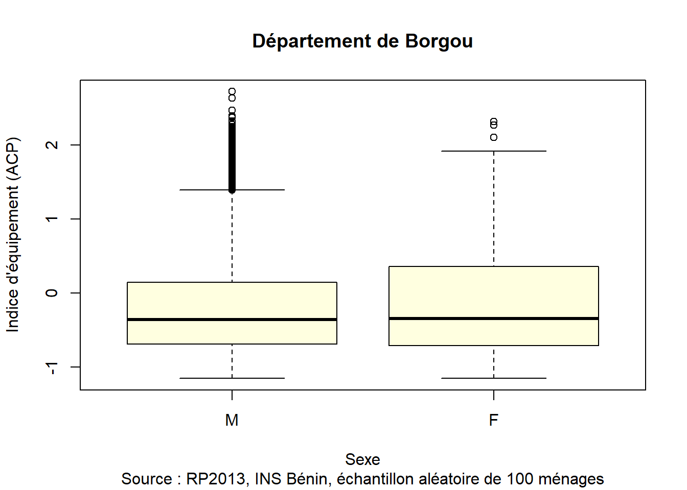
summary(mod)
Call:
lm(formula = Y ~ X)
Residuals:
Min 1Q Median 3Q Max
-1.0466 -0.5419 -0.2080 0.3273 2.8664
Coefficients:
Estimate Std. Error t value Pr(>|t|)
(Intercept) -0.14801 0.01184 -12.50 <2e-16 ***
XF 0.04463 0.05187 0.86 0.39
---
Signif. codes: 0 '***' 0.001 '**' 0.01 '*' 0.05 '.' 0.1 ' ' 1
Residual standard error: 0.7558 on 4298 degrees of freedom
Multiple R-squared: 0.0001722, Adjusted R-squared: -6.039e-05
F-statistic: 0.7404 on 1 and 4298 DF, p-value: 0.3896- Commentaire : Aucun effet significatif (p >0.3)
Statut d’occupation
X<-sel$statoc
Y<-sel$equip_acp
nameX<-"Statut d'occupation"
nameY<-"Indice d'équipement (ACP)"
titre<-"Département de Borgou"
source<-"Source : RP2013, INS Bénin, échantillon aléatoire de 100 ménages"
mod<-lm(Y~X)
boxplot(Y~X,
main=titre,
sub = source,
xlab=nameX,
ylab=nameY,
col="lightyellow")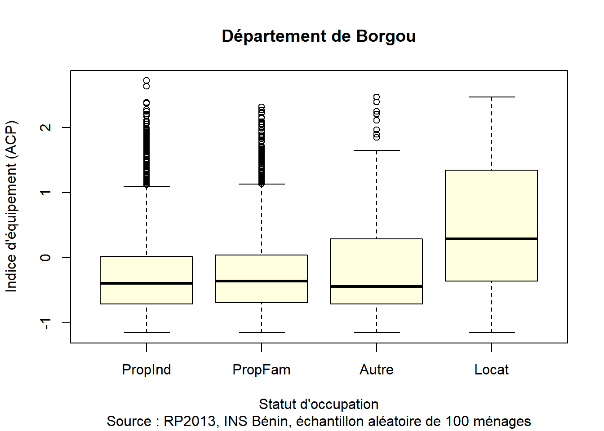
summary(mod)
Call:
lm(formula = Y ~ X)
Residuals:
Min 1Q Median 3Q Max
-1.6396 -0.4977 -0.1644 0.2733 2.9374
Coefficients:
Estimate Std. Error t value Pr(>|t|)
(Intercept) -0.21905 0.01675 -13.080 <2e-16 ***
XPropFam 0.02718 0.02375 1.144 0.253
XAutre 0.05204 0.06237 0.834 0.404
XLocat 0.70865 0.04191 16.909 <2e-16 ***
---
Signif. codes: 0 '***' 0.001 '**' 0.01 '*' 0.05 '.' 0.1 ' ' 1
Residual standard error: 0.7309 on 4296 degrees of freedom
Multiple R-squared: 0.06533, Adjusted R-squared: 0.06468
F-statistic: 100.1 on 3 and 4296 DF, p-value: < 2.2e-16- Commentaire : Avantage significatif des locataires (p <0.001) mais cela révèle sans doute un effet urbain-rural.
Classe d’âge
sel$age5<-cut(sel$age, breaks=c(18,29,39,49,59,100),include.lowest = T)
levels(sel$age5)<-c("18-29", "30-39","40-49","50-59","60+")
X<-sel$age5
Y<-sel$equip_acp
nameX<-"Classe d'âge"
nameY<-"Indice d'équipement (ACP)"
titre<-"Département de Borgou"
source<-"Source : RP2013, INS Bénin, échantillon aléatoire de 100 ménages"
mod<-lm(Y~X)
boxplot(Y~X,
main=titre,
sub = source,
xlab=nameX,
ylab=nameY,
col="lightyellow")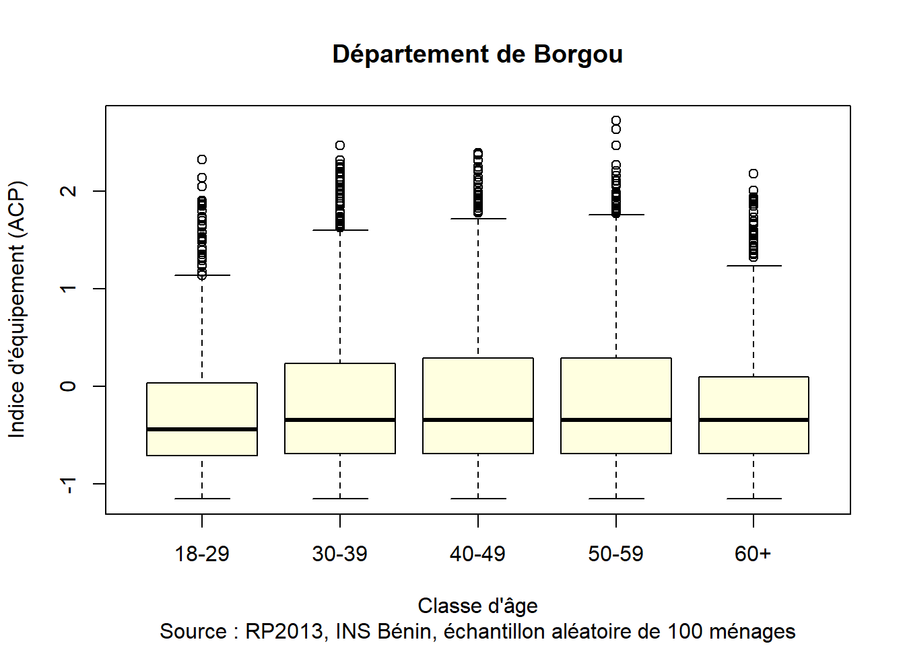
summary(mod)
Call:
lm(formula = Y ~ X)
Residuals:
Min 1Q Median 3Q Max
-1.0509 -0.5593 -0.2041 0.3672 2.8262
Coefficients:
Estimate Std. Error t value Pr(>|t|)
(Intercept) -0.27122 0.03081 -8.803 < 2e-16 ***
X30-39 0.14093 0.03707 3.802 0.000146 ***
X40-49 0.17214 0.03872 4.446 8.98e-06 ***
X50-59 0.16336 0.04217 3.874 0.000109 ***
X60+ 0.09515 0.04282 2.222 0.026335 *
---
Signif. codes: 0 '***' 0.001 '**' 0.01 '*' 0.05 '.' 0.1 ' ' 1
Residual standard error: 0.7541 on 4295 degrees of freedom
Multiple R-squared: 0.005529, Adjusted R-squared: 0.004603
F-statistic: 5.97 on 4 and 4295 DF, p-value: 8.685e-05- Commentaire : Relation significative mais à très faible pouvoir explicatif. Effet non linéaire avec maximum d’équipement pour la classe d’âge des 40-49 ans.
Niveau d’étude
X<-sel$etud5
Y<-sel$equip_acp
nameX<-"Niveau d'étude"
nameY<-"Indice d'équipement (ACP)"
titre<-"Département de Borgou"
source<-"Source : RP2013, INS Bénin, échantillon aléatoire de 100 ménages"
mod<-lm(Y~X)
boxplot(Y~X,
main=titre,
sub = source,
xlab=nameX,
ylab=nameY,
col="lightyellow")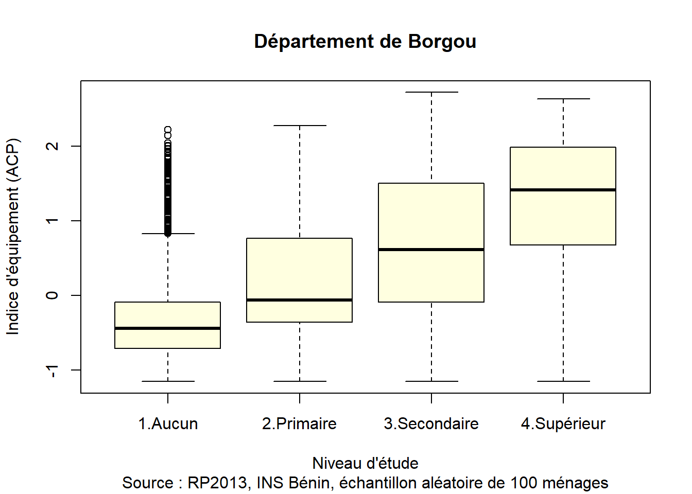
summary(mod)
Call:
lm(formula = Y ~ X)
Residuals:
Min 1Q Median 3Q Max
-2.3552 -0.3876 -0.1218 0.3426 2.5335
Coefficients:
Estimate Std. Error t value Pr(>|t|)
(Intercept) -0.31751 0.01139 -27.87 <2e-16 ***
X2.Primaire 0.51588 0.03379 15.27 <2e-16 ***
X3.Secondaire 1.00048 0.03519 28.43 <2e-16 ***
X4.Supérieur 1.52277 0.07646 19.92 <2e-16 ***
---
Signif. codes: 0 '***' 0.001 '**' 0.01 '*' 0.05 '.' 0.1 ' ' 1
Residual standard error: 0.6634 on 4296 degrees of freedom
Multiple R-squared: 0.23, Adjusted R-squared: 0.2294
F-statistic: 427.7 on 3 and 4296 DF, p-value: < 2.2e-16- Commentaire : Relation très significative et à très fort pouvoir explicatif comparée aux précédentes (r2 = 23%). Il s’agit du facteur le plus déterminant parmi ceux qui ont été retenus
Taille du ménage
X<-log(sel$tailmen)
Y<-sel$equip_acp
nameX<-"Taille du ménage (log)"
nameY<-"Indice d'équipement (ACP)"
titre<-"Département de Borgou"
source<-"Source : RP2013, INS Bénin, échantillon aléatoire de 100 ménages"
mod<-lm(Y~X)
plot(X,Y ,
main=titre,
sub = source,
xlab=nameX,
ylab=nameY)
abline(mod, col="red")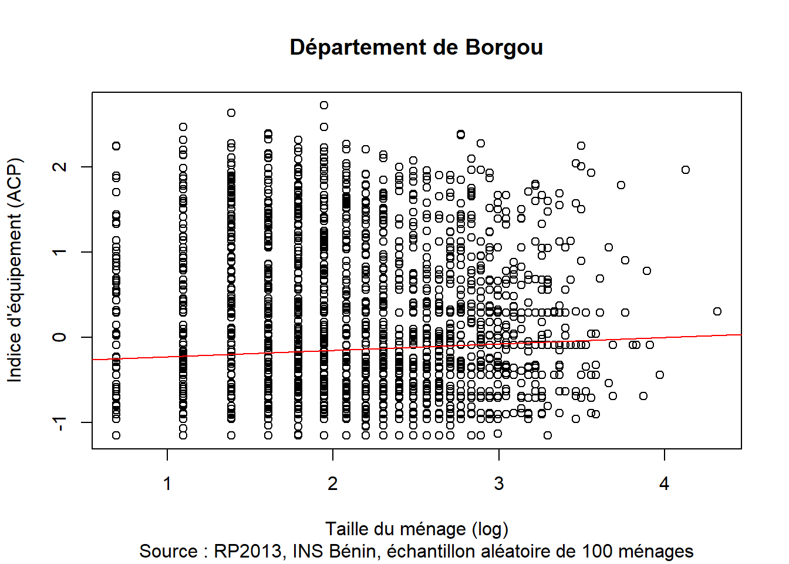
summary(mod)
Call:
lm(formula = Y ~ X)
Residuals:
Min 1Q Median 3Q Max
-1.0960 -0.5382 -0.2011 0.3109 2.8734
Coefficients:
Estimate Std. Error t value Pr(>|t|)
(Intercept) -0.30088 0.04123 -7.298 3.47e-13 ***
X 0.07493 0.01912 3.920 9.00e-05 ***
---
Signif. codes: 0 '***' 0.001 '**' 0.01 '*' 0.05 '.' 0.1 ' ' 1
Residual standard error: 0.7545 on 4298 degrees of freedom
Multiple R-squared: 0.003562, Adjusted R-squared: 0.00333
F-statistic: 15.36 on 1 and 4298 DF, p-value: 9.001e-05- Commentaire : Relation significative mais à très faible pouvoir explicatif
VARIABLES CONTEXTUELLES
Nous proposons maintenant une suite d’analyse portant sur les déterminants spatiaux en distinguant deux cas selon que la variable explicative est catégorielle ou selon qu’elle correspond à un effect continu d’éloignement.
Déterminants territoriaux
Les déterminants territoriaux correspondent au cas où la variable explicative est catégorielle et où l’effet sur le ménage est lié à son appartenance à un type d’espace. Ceci nous permet d’identifier trois variables :
- URBA : l’arrondissement où le ménage est situé est-il déclaré “rural” ou “urbain” par l’état ?
- DEF_CHEF : l’arrondissement où le ménage est situé est-il le siège d’un chef-lieu de département
- COM_CHEF : l’arrondissement où le ménage est situé est-il le siège d’un chef-lieu de commune
map1<-BEN1[BEN1$DEP_NAME=="BORGOU",]
map2<-BEN2[BEN2$DEP_NAME=="BORGOU",]
map3<-BEN3[BEN3$DEP_NAME=="BORGOU",]
map3$URBA<-as.factor(map3$URBA)
levels(map3$URBA)<-c("Rural","Urbain")
map2ctr<-st_centroid(map3[map3$COM_CHEF==1 & map3$DEP_CHEF==0,])
map1ctr<-st_centroid(map3[ map3$DEP_CHEF==1,])
mf_map(map3,type="typo",var="URBA",pal=c("lightyellow","orange"), border="gray",lwd=0.3,leg_title = "Type d'espace")
mf_map(map2,type="base",col=NA, border="black",lwd=1, add=T)
mf_map(map1,type="base",col=NA, border="black",lwd=2, add=T)
mf_map(map2ctr,type="base",pch=20,col="blue",add=T)
mf_label(map2ctr,var = "COM_NAME", col="blue",pos=1)
mf_map(map1ctr,type="base",pch=15,col="red",add=T, cex=2)
mf_label(map1ctr,var = "COM_NAME", col="red",pos=1,cex = 1.2)
mf_layout(title = "Communes et arrondissements du Borgou",
credits = "Source : EE CIST 2023",frame = T)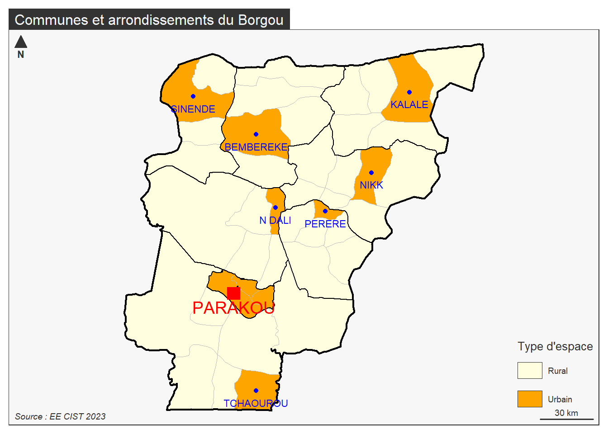
Urbain/Rural
L’attribution du caractère urbain ou rural à un arrondissement est le résultat d’une décision administrative de l’état. Elle se traduit dans le recensement de 2013 par l’ajout d’un code “5” en quatrième position du code de l’arrondissement. Il peut y avoir plusieurs arrondissements “urbains” à l’intérieur d’une même commune. Il peut également arriver que l’ensemble d’une commune soit composée d’arrondissements urbain comme c’est le cas pour Parakou. Les arrondissements urbains contigus portent en général le même nom suivi d’un numéro (PARAKOU 01, PARAKOU 02, PARAKOU 03, PARAKOU 04) et leur réunion forment implicitement une “ville” dans une logique administrative. Mais les contours de ces villes sont très différents de ceux que l’on pourrait obtenir par des sources non administratives telles que les images de télédétection utilisées par la base Africapolis où des données détaillées de mobilité à l’échelon indiviuel (non accessibles pour des raisons de secret statistique).
Qu’elle reflète ou non une réalité morphologique (continuité du bâti) ou fonctionnelle (solde migratoire positif) n’est cependant pas ici la question principale. En revanche il peut être intéressant de se demander si les arrondissements urbains bénéficient d’un traitement privilégié de l’état, conduisant par exemple celui-ci à mettre en place des politiques publiques qui privilégient ces lieux en matière de déploiement d’infrastructures (écoles, lycées, cliniques, …) ce qui peut attirer des populations plus riches ou plus éduquées, dotées d’un meilleur équipement.
sel$URBA<-as.factor(sel$URBA)
levels(sel$URBA)<-c("Rural","Urbain")
X<-sel$URBA
Y<-sel$equip_acp
nameX<-"Catégorisation administrative de l'arrondissement"
nameY<-"Indice d'équipement (ACP)"
titre<-"Département de Borgou"
source<-"Source : RP2013, INS Bénin"
mod<-lm(Y~X)
boxplot(Y~X,
main=titre,
sub = source,
xlab=nameX,
ylab=nameY,
col="lightyellow")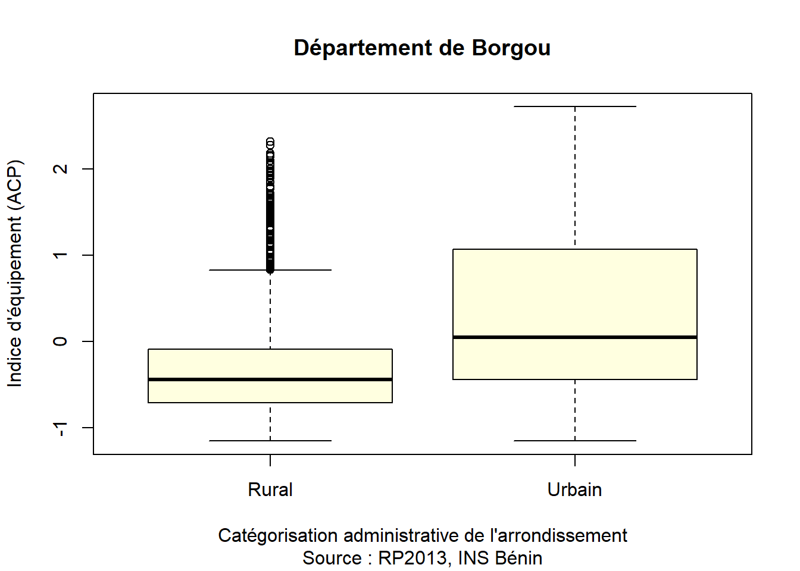
summary(mod)
Call:
lm(formula = Y ~ X)
Residuals:
Min 1Q Median 3Q Max
-1.4616 -0.4209 -0.1550 0.3096 2.5972
Coefficients:
Estimate Std. Error t value Pr(>|t|)
(Intercept) -0.28426 0.01241 -22.91 <2e-16 ***
XUrbain 0.59587 0.02573 23.16 <2e-16 ***
---
Signif. codes: 0 '***' 0.001 '**' 0.01 '*' 0.05 '.' 0.1 ' ' 1
Residual standard error: 0.7127 on 4298 degrees of freedom
Multiple R-squared: 0.111, Adjusted R-squared: 0.1108
F-statistic: 536.4 on 1 and 4298 DF, p-value: < 2.2e-16- Commentaire : La relation obtenue est très significative (p<0.001) et son pouvoir explicatif est important (r2 = 11%).
Fonction administrative
Dans une logique légèrement différente, on peut se demander si les arrondissements qui remplissent des fonction de centralité administrative bénéficient d’un traitement privilégié de la part de l’état. Dans le cas du Bénin, tous les arrondissements qui sont centre de commune sont automatiquement déclarés urbains. Mais l’inverse n’est pas vrai et des arrondissements urbains peuvent ne pas être le siège d’un chef-lieu de commune ou de département.
sel$CHEF<-as.factor(sel$COM_CHEF+sel$DEP_CHEF)
levels(sel$CHEF)<-c("Aucune","Centre de commune", "Centre de département")
X<-sel$CHEF
Y<-sel$equip_acp
nameX<-"Fonction administraive"
nameY<-"Indice d'équipement (ACP)"
titre<-"Département de Borgou"
source<-"Source : RP2013, INS Bénin"
mod<-lm(Y~X)
boxplot(Y~X,
main=titre,
sub = source,
xlab=nameX,
ylab=nameY,
col="lightyellow")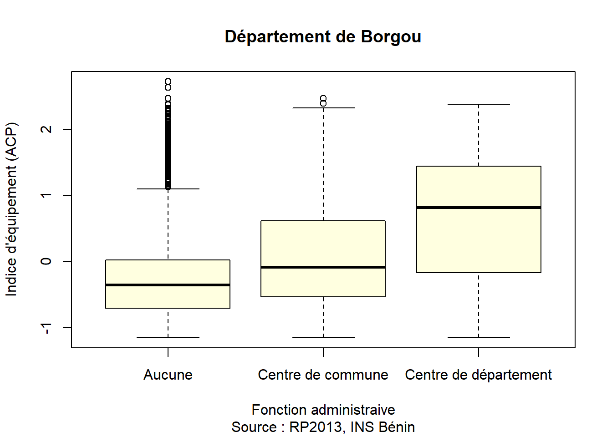
summary(mod)
Call:
lm(formula = Y ~ X)
Residuals:
Min 1Q Median 3Q Max
-1.8020 -0.4863 -0.1964 0.2591 2.9371
Coefficients:
Estimate Std. Error t value Pr(>|t|)
(Intercept) -0.21880 0.01244 -17.58 <2e-16 ***
XCentre de commune 0.32471 0.03048 10.65 <2e-16 ***
XCentre de département 0.87083 0.07467 11.66 <2e-16 ***
---
Signif. codes: 0 '***' 0.001 '**' 0.01 '*' 0.05 '.' 0.1 ' ' 1
Residual standard error: 0.7362 on 4297 degrees of freedom
Multiple R-squared: 0.05158, Adjusted R-squared: 0.05113
F-statistic: 116.8 on 2 and 4297 DF, p-value: < 2.2e-16- Commentaire : La relation obtenue est très significative (p<0.001) même si son pouvoir explicatif est plus limité (r2 = 5%) que celui de l’opposition urbain-rural . On note un net accroissement du niveau d’équipement des ménages avec le niveau administraif de l’arrondissement où ils sont localisés (+0.32 pour un chef lieu de commune et +0.87 pour un chef lieu de département)
Accessibilité
Les déterminants spatiaux correspondent au cas où la variable explicative est de type quantitatif continu et où l’effet sur le ménage est lié à son accessibilité à une ressource c’est-à-dire à l’influence de la distance.
par(mfrow=c(1,2))
mypal<-brewer.pal(7,"RdYlGn")
## Distance à la commune
mybreaks=c(0,5,10,20,40,80, 160, 320)
mf_map(map3,
type="choro",
var="COM_CHEF_DIST",
pal=mypal,
breaks=mybreaks,
border="gray",
lwd=0.3,
leg_title = "Distance(km)",
leg_val_rnd = 0)
mf_map(map2,type="base",col=NA, border="black",lwd=2, add=T)
mf_map(map1,type="base",col=NA, border="black",lwd=2, add=T)
mf_map(map2ctr,type="base",pch=20,col="black",add=T)
mf_label(map2ctr,var = "COM_NAME", col="black",pos=1)
mf_map(map1ctr,type="base",pch=20,col="black",add=T, cex=1)
mf_label(map1ctr,var = "COM_NAME", col="black",pos=1)
mf_layout(title = "Accessibilité Communale",
credits = "Source : EE CIST 2023",frame = T)
## Distance au dept
mybreaks=c(0,5,10,20,40,80, 160, 320)
mf_map(map3,
type="choro",
var="DEP_CHEF_DIST",
pal=mypal,
breaks=mybreaks,
border="gray",
lwd=1,
leg_title = "Distance (km)",
leg_val_rnd = 0)
#mf_map(map2,type="base",col=NA, border="black",lwd=1, add=T)
mf_map(map1,type="base",col=NA, border="black",lwd=2, add=T)
mf_map(map1ctr,type="base",pch=15,col="black",add=T, cex=1)
mf_label(map1ctr,var = "COM_NAME", col="black",pos=1)
mf_layout(title = "Accessibilité Départementale",
credits = "Source : EE CIST 2023",frame = T)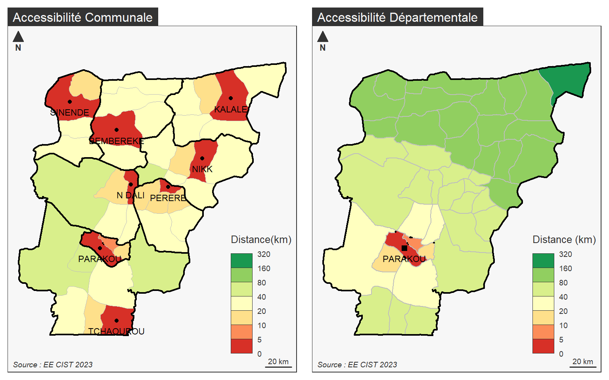
summary(map3$NAT_CHEF_DIST) Min. 1st Qu. Median Mean 3rd Qu. Max.
278.9 351.1 385.4 387.5 429.0 481.7 Accessibilité communale
On utilise une fonction puissance dela distance en ajoutant une valeur minimale de 1km correspondant à l’acccessibilité interne du centre.
\(f(D_{ij})=\alpha\times (1+D_{ij})^{-\beta}\)
sel$log_Dis_COM<-log(1+sel$COM_CHEF_DIST)
X<-sel$log_Dis_COM
Y<-sel$equip_acp
nameX<-"Distance au centre de la commune (racine carrée)"
nameY<-"Indice d'équipement (ACP)"
titre<-"Département de Borgou"
source<-"Source : RP2013, INS Bénin"
mod<-lm(Y~X)
plot(X,Y ,
pch=20,
cex=0.4,
main=titre,
sub = source,
xlab=nameX,
ylab=nameY)
abline(mod, col="red")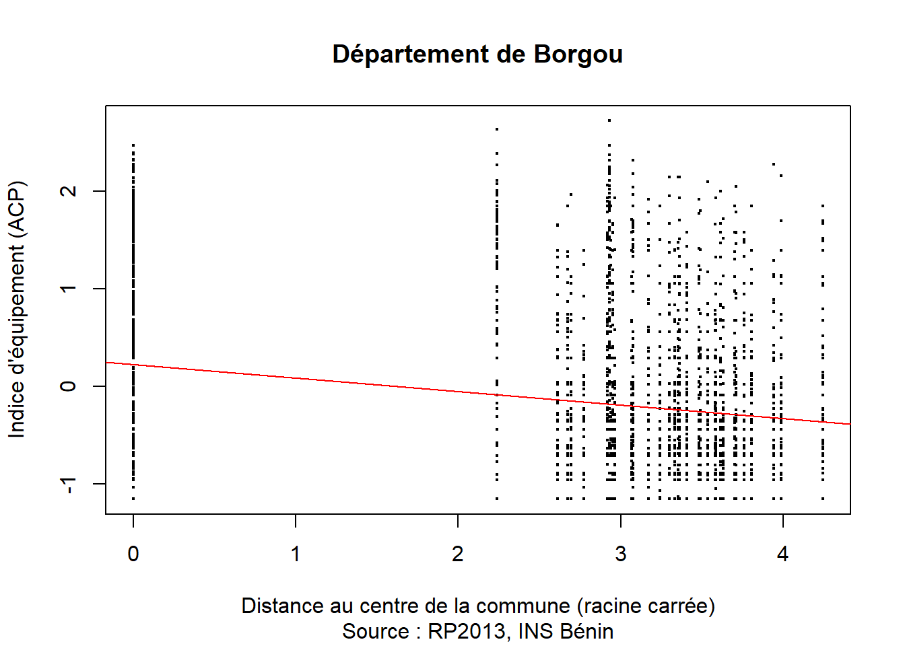
summary(mod)
Call:
lm(formula = Y ~ X)
Residuals:
Min 1Q Median 3Q Max
-1.3740 -0.5058 -0.1704 0.2952 2.8977
Coefficients:
Estimate Std. Error t value Pr(>|t|)
(Intercept) 0.224016 0.025007 8.958 <2e-16 ***
X -0.137577 0.008324 -16.527 <2e-16 ***
---
Signif. codes: 0 '***' 0.001 '**' 0.01 '*' 0.05 '.' 0.1 ' ' 1
Residual standard error: 0.733 on 4298 degrees of freedom
Multiple R-squared: 0.05975, Adjusted R-squared: 0.05953
F-statistic: 273.1 on 1 and 4298 DF, p-value: < 2.2e-16- Commentaire : La relation obtenue est très significative (p<0.001) même si son pouvoir explicatif est plus limité (r2 = 5.9%). Ceci s’explique tout d’abord par l’incertitude de mesure : la distance utilisée est l’éloignement entre les arrondissements et non pas entre l’individu et le centre de sa commune. Mais aussi par la diversité des ménages en matière d’équipement quelle que soit la distance au centre.
Accessibilité départementale
sel$log_Dis_DEP<-log(1+sel$DEP_CHEF_DIST)
X<-sel$log_Dis_DEP
Y<-sel$equip_acp
nameX<-"Distance au centre du département (racine carrée)"
nameY<-"Indice d'équipement (ACP)"
titre<-"Département de Borgou"
source<-"Source : RP2013, INS Bénin"
mod<-lm(Y~X)
plot(X,Y ,
pch=20,
cex=0.4,
main=titre,
sub = source,
xlab=nameX,
ylab=nameY)
abline(mod, col="red")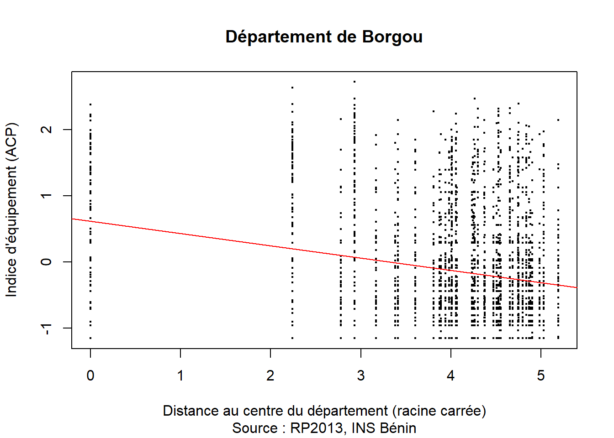
summary(mod)
Call:
lm(formula = Y ~ X)
Residuals:
Min 1Q Median 3Q Max
-1.7701 -0.5303 -0.1672 0.3236 2.6581
Coefficients:
Estimate Std. Error t value Pr(>|t|)
(Intercept) 0.62010 0.05284 11.74 <2e-16 ***
X -0.18617 0.01255 -14.83 <2e-16 ***
---
Signif. codes: 0 '***' 0.001 '**' 0.01 '*' 0.05 '.' 0.1 ' ' 1
Residual standard error: 0.7372 on 4298 degrees of freedom
Multiple R-squared: 0.0487, Adjusted R-squared: 0.04847
F-statistic: 220 on 1 and 4298 DF, p-value: < 2.2e-16- Commentaire : La relation obtenue demeure très significative (p<0.001) mais son pouvoir explicatif demeure limité (r2 = 4.8%). On peut toutefois se demander si la difficulté ne vient pas du fait que l’on emploie séparément les deux distances.
SYNTHESE
Variables endogènes
mod1<-lm(data=sel, equip_acp~sexe+age5+etud5+statoc+log(tailmen))
summary(mod1)
Call:
lm(formula = equip_acp ~ sexe + age5 + etud5 + statoc + log(tailmen),
data = sel)
Residuals:
Min 1Q Median 3Q Max
-2.4388 -0.4287 -0.1140 0.3279 2.5973
Coefficients:
Estimate Std. Error t value Pr(>|t|)
(Intercept) -0.916594 0.044417 -20.636 < 2e-16 ***
sexeF 0.028896 0.045469 0.635 0.525137
age530-39 0.114650 0.032124 3.569 0.000362 ***
age540-49 0.119268 0.034319 3.475 0.000515 ***
age550-59 0.152648 0.037751 4.044 5.36e-05 ***
age560+ 0.146543 0.038852 3.772 0.000164 ***
etud52.Primaire 0.523532 0.033074 15.829 < 2e-16 ***
etud53.Secondaire 0.968036 0.036603 26.447 < 2e-16 ***
etud54.Supérieur 1.484354 0.076694 19.354 < 2e-16 ***
statocPropFam 0.032855 0.021008 1.564 0.117919
statocAutre 0.001424 0.055424 0.026 0.979505
statocLocat 0.386957 0.041011 9.436 < 2e-16 ***
log(tailmen) 0.213819 0.018624 11.481 < 2e-16 ***
---
Signif. codes: 0 '***' 0.001 '**' 0.01 '*' 0.05 '.' 0.1 ' ' 1
Residual standard error: 0.6451 on 4287 degrees of freedom
Multiple R-squared: 0.2736, Adjusted R-squared: 0.2715
F-statistic: 134.5 on 12 and 4287 DF, p-value: < 2.2e-16Anova(mod1, type="III")Anova Table (Type III tests)
Response: equip_acp
Sum Sq Df F value Pr(>F)
(Intercept) 177.20 1 425.8469 < 2.2e-16 ***
sexe 0.17 1 0.4039 0.5251369
age5 8.40 4 5.0495 0.0004654 ***
etud5 455.68 3 365.0219 < 2.2e-16 ***
statoc 37.92 3 30.3742 < 2.2e-16 ***
log(tailmen) 54.85 1 131.8034 < 2.2e-16 ***
Residuals 1783.91 4287
---
Signif. codes: 0 '***' 0.001 '**' 0.01 '*' 0.05 '.' 0.1 ' ' 1- Commentaire : la combinaison des déterminants sociaux aboutit à un modèle où toutes les variables apportent une contribution significative au modèle à l’exception du sexe. L’analyse de variance de type III (toutes choses égales par ailleurs) confirme le rôle central du niveau de diplôme du chef de ménage qui est de lon la variable qui contribue le plus à l’explication du niveau d’équipement. La taille du ménage joue également un rôle ainsi que le statut d’occupation qui montre un meilleur équipement des locataires.
Variables contextuelles
mod2<-lm(data=sel, equip_acp~URBA+CHEF+log_Dis_COM+log_Dis_DEP)
summary(mod2)
Call:
lm(formula = equip_acp ~ URBA + CHEF + log_Dis_COM + log_Dis_DEP,
data = sel)
Residuals:
Min 1Q Median 3Q Max
-2.0592 -0.4579 -0.1302 0.2908 2.6133
Coefficients:
Estimate Std. Error t value Pr(>|t|)
(Intercept) 0.19995 0.15359 1.302 0.193045
URBAUrbain 1.01876 0.06919 14.723 < 2e-16 ***
CHEFCentre de commune -1.00552 0.09711 -10.354 < 2e-16 ***
CHEFCentre de département -0.56667 0.13705 -4.135 3.62e-05 ***
log_Dis_COM -0.11424 0.03072 -3.718 0.000203 ***
log_Dis_DEP -0.02400 0.02131 -1.126 0.260113
---
Signif. codes: 0 '***' 0.001 '**' 0.01 '*' 0.05 '.' 0.1 ' ' 1
Residual standard error: 0.6951 on 4294 degrees of freedom
Multiple R-squared: 0.1551, Adjusted R-squared: 0.1541
F-statistic: 157.6 on 5 and 4294 DF, p-value: < 2.2e-16Anova(mod2, type="III")Anova Table (Type III tests)
Response: equip_acp
Sum Sq Df F value Pr(>F)
(Intercept) 0.82 1 1.6948 0.193045
URBA 104.74 1 216.7735 < 2.2e-16 ***
CHEF 52.69 2 54.5220 < 2.2e-16 ***
log_Dis_COM 6.68 1 13.8266 0.000203 ***
log_Dis_DEP 0.61 1 1.2685 0.260113
Residuals 2074.86 4294
---
Signif. codes: 0 '***' 0.001 '**' 0.01 '*' 0.05 '.' 0.1 ' ' 1- Commentaire : le mélange des variables contextuelles est difficile à interpréter en raison ds fortes redondances qu’il y a entre certaines variables explicatives. En effet la variable URBA est corrélée avec le fait d’être ou pas un centre de commune ou de département. Tandis que la distance à la commune ou au chef lieu est corrélée avec le fait d’être ou non un chef-lieu de commune ou de district. Il faudra donc n’en retenir qu’une partie par la suite, mais le point intéressant est le pouvoir explicatif élevé du modèle (r2 = 15.4%) alors même qu’aucune caractéristique endogène des ménages n’est prise en compte. Dit autrement, la simple connaissance de l’arrondissement où est localisé un ménage permet de prédire la probabilité que son niveau d’équipement soit faible ou élevée.
Variables endogènes et contextuelles
On construit un modèle final reprenant l’ensemble des variables endogènes mais en leur ajoutant les deux mesures d’accessibilité a au centre de commune ou de district.
mod3<-lm(data=sel, equip_acp~sexe+age5+etud5+statoc+log(tailmen)+log_Dis_COM+log_Dis_DEP)
summary(mod3)
Call:
lm(formula = equip_acp ~ sexe + age5 + etud5 + statoc + log(tailmen) +
log_Dis_COM + log_Dis_DEP, data = sel)
Residuals:
Min 1Q Median 3Q Max
-2.2520 -0.4202 -0.1089 0.3342 2.5406
Coefficients:
Estimate Std. Error t value Pr(>|t|)
(Intercept) -0.306321 0.066409 -4.613 4.09e-06 ***
sexeF -0.033727 0.044828 -0.752 0.45188
age530-39 0.098110 0.031512 3.113 0.00186 **
age540-49 0.091965 0.033702 2.729 0.00638 **
age550-59 0.114730 0.037122 3.091 0.00201 **
age560+ 0.104669 0.038229 2.738 0.00621 **
etud52.Primaire 0.458405 0.032875 13.944 < 2e-16 ***
etud53.Secondaire 0.881916 0.036459 24.189 < 2e-16 ***
etud54.Supérieur 1.383848 0.075567 18.313 < 2e-16 ***
statocPropFam 0.035043 0.020598 1.701 0.08897 .
statocAutre -0.004955 0.054330 -0.091 0.92733
statocLocat 0.291012 0.040861 7.122 1.24e-12 ***
log(tailmen) 0.232541 0.018411 12.631 < 2e-16 ***
log_Dis_COM -0.074718 0.007444 -10.037 < 2e-16 ***
log_Dis_DEP -0.096590 0.011519 -8.386 < 2e-16 ***
---
Signif. codes: 0 '***' 0.001 '**' 0.01 '*' 0.05 '.' 0.1 ' ' 1
Residual standard error: 0.6323 on 4285 degrees of freedom
Multiple R-squared: 0.3024, Adjusted R-squared: 0.3001
F-statistic: 132.7 on 14 and 4285 DF, p-value: < 2.2e-16Anova(mod3, type="III")Anova Table (Type III tests)
Response: equip_acp
Sum Sq Df F value Pr(>F)
(Intercept) 8.51 1 21.2764 4.092e-06 ***
sexe 0.23 1 0.5660 0.45188
age5 4.94 4 3.0873 0.01503 *
etud5 359.98 3 300.1273 < 2.2e-16 ***
statoc 20.78 3 17.3252 3.523e-11 ***
log(tailmen) 63.78 1 159.5393 < 2.2e-16 ***
log_Dis_COM 40.28 1 100.7420 < 2.2e-16 ***
log_Dis_DEP 28.11 1 70.3167 < 2.2e-16 ***
Residuals 1713.17 4285
---
Signif. codes: 0 '***' 0.001 '**' 0.01 '*' 0.05 '.' 0.1 ' ' 1- Commentaire : Par rapport au modèle purement endogène de modélistion des comportements individuels par les attributs des ménages, le gain est assez faible en terme de qualité d’ajustement (passage de 27% à 30%). C’est plutôt au niveau de l’interprétation que le nouveau modèle est intéressant car il révèle que le niveau d’étude se combine étroitement dans l’explication avec l’accessibilité aux centres de commune ou de districts. Ce qui laisse soupçonner une interaction entre les deux facteurs
Modèle final
Pour aboutir à un modèle final qui soit le plus simple possible, on ne retient que trois variables dont l’interprétation sera plus facile et que l’on peut associer à des hypothèses empiriquement vérifiables :
- H1 : Plus un ménage comporte de personnes, plus il a de chances de posséder un niveau d’équipement élevé. Mais l’accroissement de la relation n’est pas linéaire et suit une loi logarithmique.
- H2 : Plus le chef de ménage dispose d’un niveau d’éducation élevé, plus son ménage disposera d’un équipement élevé. Cette relation s’explique par le jeu combiné du capital économique et scolaire (Bourdieu) qui rend possible (capital économique) et désirable (capital scolaire) la possession d’équipements diversifiés.
- H3 : Plus un ménage est éloigné du centre de son département, moins il a de chances de pouvoir accéder à certains équipements en raison de déficits d’infrastructure (e.g. électricité) ou de difficulté à se les procurer.
mod4<-lm(data=sel, equip_acp~log(tailmen)+etud5+log_Dis_DEP)
summary(mod4)
Call:
lm(formula = equip_acp ~ log(tailmen) + etud5 + log_Dis_DEP,
data = sel)
Residuals:
Min 1Q Median 3Q Max
-2.2606 -0.4323 -0.1118 0.3376 2.6442
Coefficients:
Estimate Std. Error t value Pr(>|t|)
(Intercept) -0.30691 0.05673 -5.41 6.64e-08 ***
log(tailmen) 0.22826 0.01689 13.51 < 2e-16 ***
etud52.Primaire 0.49041 0.03333 14.71 < 2e-16 ***
etud53.Secondaire 1.00855 0.03512 28.72 < 2e-16 ***
etud54.Supérieur 1.54868 0.07532 20.56 < 2e-16 ***
log_Dis_DEP -0.11718 0.01151 -10.18 < 2e-16 ***
---
Signif. codes: 0 '***' 0.001 '**' 0.01 '*' 0.05 '.' 0.1 ' ' 1
Residual standard error: 0.6452 on 4294 degrees of freedom
Multiple R-squared: 0.2721, Adjusted R-squared: 0.2713
F-statistic: 321 on 5 and 4294 DF, p-value: < 2.2e-16Anova(mod4, type="III")Anova Table (Type III tests)
Response: equip_acp
Sum Sq Df F value Pr(>F)
(Intercept) 12.18 1 29.271 6.637e-08 ***
log(tailmen) 76.01 1 182.602 < 2.2e-16 ***
etud5 521.10 3 417.272 < 2.2e-16 ***
log_Dis_DEP 43.16 1 103.686 < 2.2e-16 ***
Residuals 1787.50 4294
---
Signif. codes: 0 '***' 0.001 '**' 0.01 '*' 0.05 '.' 0.1 ' ' 1- Commentaire: notre modèle final met en valeur le rôle décisif du niveau d’étude (proxy du capital scolaire et économique) mais il confirme l’effet positif de la taille du ménage et l’effet négatif de la distance au centre de commandement du département. Son équation final peut s’écrire :
\(I_{equipt} = -0.31 + \alpha_{Niv.scolaire} + 0.22\times log({taille du ménage}) -0.11\times log({accessibilité})\)